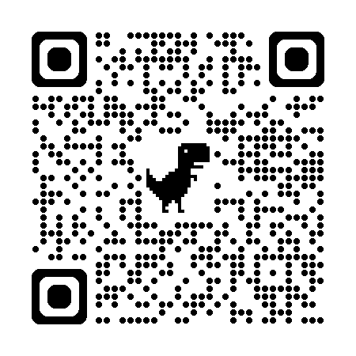

Useful Expressions for the CA Assignment
Presented by Rebecca Tang
Use a friendly greeting, state your name and the department you are from.
Basic pattern:
You: Hi! Nice to meet you. I'm ______ from the ________ Department.
Tip: click any word in the sentences to hear its pronunciation.
| Tense | Function | Form |
|---|---|---|
| Present perfect | To describe what has been completed recently | Have/has + past participle verb — e.g., 'We have completed the product trial.' |
| Present continuous | To describe what is happening now | Am/is/are + present participle verb — e.g., 'Our marketing team is organising a promotional campaign for the health and wellness products.' |
| Future tense | To describe what will happen | Will + base form of verb — e.g., 'We'll launch the new line by the end of next month.' |
Example (Task 3aii–ix):
Task completed Design an eco-friendly home decor line made from sustainable materials |
→ | Task in progress Create a marketing plan to promote Our New eco-friendly home decor line |
→ | Work to complete Introduce our new eco-friendly home decor line with a launch event to showcase the new line of products |
Giving examples: For example / instance, …
Positive:
Negative:
Neutral:
| Positive adjectives |
|---|
| accommodating [遷就的／肯配合的] · beneficial [有益的] · considerate [體貼的] · convenient [方便的] · effective [有效的] · cost-effective [具成本效益的] · flexible [靈活的] · generous [慷慨的] · valuable [有價值的] · helpful [有幫助的] · meaningful [有意義的] · morale-boosting [鼓舞士氣的] · practical [實際的／實用的] · progressive [進步的／前衛的] · staff-friendly [對員工友善的] · supportive [支持性的] · useful [有用的] · worthwhile [值得的] |
| Negative adjectives |
| disappointing [令人失望的] · disruptive [造成干擾的] · disturbing [令人不安的] · impractical [不切實際的] · inappropriate [不合適的] · inconsiderate [不體貼的] · inflexible [不靈活的] · restrictive [限制性的] · rigid [僵化的] · short-sighted [短視的] · underwhelming [不夠出色的] · unfair [不公平的] · unreasonable [不合理的] |
| Positive verbs |
|---|
| increase [增加] · improve [改善] · enhance [提升] · boost [促進] · enrich [豐富] · promote [推廣] · help [幫助] · encourage [鼓勵] · support [支持] · create [創造] |
| Negative verbs |
| decrease [減少] · reduce [降低] · worsen [惡化] · impair [損害] · hinder [阻礙] |
Your Class: Pair no.
The conversation will last 6 minutes.
Student A download this copy as a word.doc and share it with Student B.
Start writing your script via Google Doc.
The draft will not be marked but it can help you practice more smoothly.
Do not memorise any script. Express your own ideas naturally.
Send me a shareable Google doc link to access your CA draft via WhatsApp for my checking and comment.
| Student A (Name: ) | Student B (Name: ) |
|---|---|
A 'Hi. I don't think we've met yet. I'm Role A's name and I'm from the Role A's department. It's nice to meet you.' |
|
B 'Hi. I'm Role B's name from the Role B's department. It's nice to meet you too.' |
|
A 'So how's your day been?' |
|
B 'Very good, thanks for asking. I about B's holiday plan.' |
|
A 'echo key words on B's holiday plan? Nice! It seems that showing interest by giving follow up questions' |
|
B 'Yes. I B's holiday plan.' |
|
A 'Really? I've been thinking about B's option for his holiday plan. Do you have any recommendations for type of holiday goers?' |
|
B 'Definitely! For type of holiday goers, I'd suggest destination. It's positive comment on the destination. Plus, it's also positive comment. It's a great place to activity.' 'What about you? Do you follow up question on holiday plan?' |
|
A 'answer to the follow-up question about the holiday plan' |
|
B positive comment on A's answer and follow-up question |
|
A answer to the follow-up question |
|
B 'That sounds enjoyable! positive comment on A's answer I'll have to check it out.' |
|
B 'So, what's your department working on these days?' |
|
A 'We're task in A's project in progress. Moving forward, we'll task in A's project to complete. Hopefully, we'll expected outcome of the project.' |
|
B 'Sounds great! It'll be nice to positive comment no A's project.' |
|
A 'That's right. What about your department?' |
|
B 'Our department is working on task in B's project in progress. We're aiming to expected outcome of B's project. We've recently task completed in B's project. In the coming months, we'll task to complete in B's project.' |
|
A 'I'm intrigued by the B's project already. It will surely help to benefit of B's project.' |
|
B 'Thank you, Student A's name. We are very enthusiastic about it.' |
|
B 'By the way, what do you think about the policy our company introduced?' |
|
A 'Yes, I think it's a very positive step forward because it benefit(s of the new company policy]. elaboration on the benefits What do you think about the new policy?' |
|
B 'It seems to be positive comment on the company policy. I think it can benefit(s of the company policy]. However, I'm worried that possible drawback of the policy. It's important to solution to the drawback of the policy.' |
|
A 'That's a valid concern. explanation to agreement on B's suggested solution.' |
|
B 'Yes. Hopefully, everything will run smoothly.' |
|
A 'Certainly. I've got to head back to my team. It was nice talking to you!' |
|
B 'Yes. It was great. I'm going to mingle a bit more. See you around.' |
|
A 'See you.' |
Click any grey underlined hint to type your own words. Boxes grow as you write.
Record in a quiet place. Turn off all beeping devices.
|
Ensure your full face is visible and voice is clearly recorded. Speak loudly and clearly.
|
Read the identification message before your 6-minute conversation.
|
Do not memorize or read directly from the Role Card. Express your own ideas naturally and add relevant information.
|
Avoid dominating the conversation—both students should contribute equally.
|
Do not coach or help your partner during the recording. Do not peek at or point to your partner's Role Card.
|
Listen actively and respond appropriately to your partner.
|
Recording done face-to-face and in one take. NO dubbing/editing allowed.
|
Click the "Show Chinese" button to view the Chinese translations.
a Public Relations Officer at Bright Future Education Centre. You are at a staff appreciation dinner.
Hold a conversation with your colleague, Ashley Lam (Student B, a Facilities Officer).
You should perform all items below:
Project: Organising an Open Day
You may talk about what has been done so far, and plans for the coming months.
Your company has just introduced a new workplace uniform policy. All staff must wear the company-provided polo shirt with formal trousers or skirts. Jeans and sneakers are not allowed.
You may talk about what you think or feel about the policy and why. Also discuss the potential benefits and drawbacks the policy may bring to the company and its employees.
a Facilities Officer at Bright Future Education Centre. You are at a staff appreciation dinner.
Hold a conversation with your colleague, Alex Liu (Student A, a Public Relations Officer).
You should perform all items below:
Project: Renovating the classrooms
You may talk about what has been done so far, and plans for the coming months.
Your company has just introduced a new workplace uniform policy. All staff must wear the company-provided polo shirt with formal trousers or skirts. Jeans and sneakers are not allowed.
You may talk about what you think or feel about the policy and why. Also discuss the potential benefits and drawbacks the policy may bring to the company and its employees.